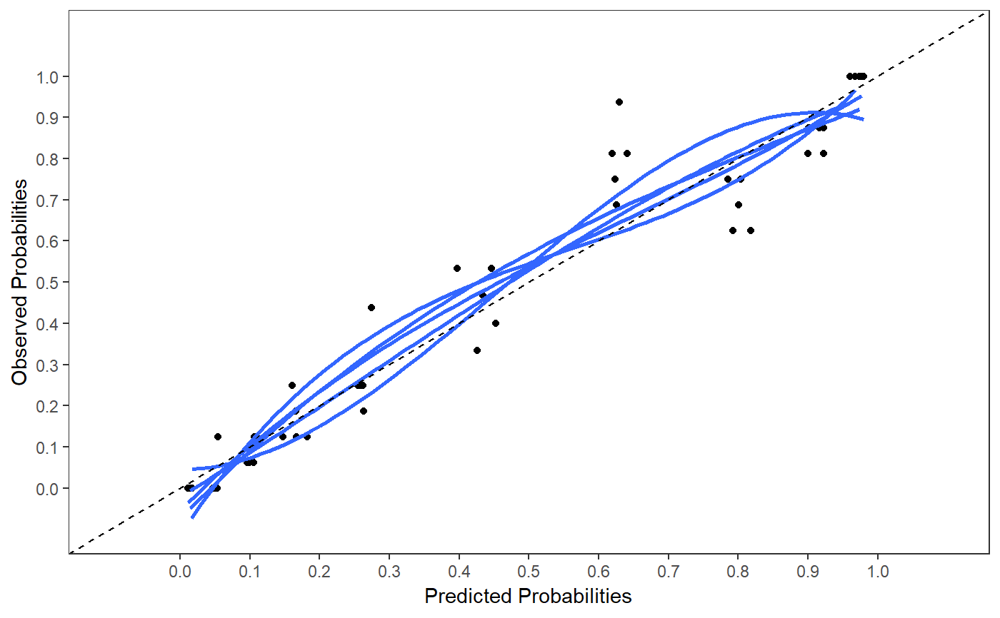

R/miperform_lr.R
miperform_lr.Rdmiperform_lr Evaluate Performance of logistic regression models
miperform_lr(data, nimp = 5, impvar = NULL, Outcome, predictors = NULL, cat.predictors = NULL, int.predictors = NULL, cal.plot = FALSE, plot.indiv = FALSE, int.val = FALSE, method = "boot", B = 250, bw = FALSE, rule = "p", type = "individual", p.val = 0.05, force = NULL)
| data | Data frame or data matrix with stacked multiple imputed datasets. The original dataset that contains missing values must be excluded from the dataset. The imputed datasets must be distinguished by an imputation variable, specified under impvar. |
|---|---|
| nimp | A numerical scalar. Number of imputed datasets. Default is 5. |
| impvar | A character vector. Name of the variable that distinguishes the imputed datasets. |
| Outcome | Character vector containing the name of the outcome variable. |
| predictors | Character vector with the names of the predictor variables. At least one predictor variable must be defined. |
| cat.predictors | A single string or a vector of strings to define the categorical variables. Default is NULL categorical predictors. |
| int.predictors | A single string or a vector of strings with the names of the variables that form an interaction pair, separated by a “:” symbol. |
| cal.plot | If TRUE a calibration plot is generated. Default is FALSE. |
| plot.indiv | If TRUE calibration plots of each imputed dataset are generated. |
| int.val | If TRUE performance measures are reported as a result of internal validation in each imputed datasets. This is a wrapper function of Frank Harrell´s validate function as part of the rms package. |
| method | "boot" is the default setting to generate bootstrap corrected performance measures. |
| B | The number of bootstrap resamples, default is 250. |
| bw | If TRUE backward selection is applied during bootstrap internal validation. Default is FALSE. Backward selection is done using the fastbw function of the rms package. |
| rule | Set at "p" for backward selection using the p-value as criterium when bw=TRUE. |
| type | Set at "individual" for backward selection of individual predictors when bw=TRUE. |
| p.val | P-value criterium for backward selection when bw=TRUE. |
| force | A vector of integers to define the variables that are forced in the model during backward selection. The integer value matches the order of the variable in the model (starting with the intercept). |
A miperform_lr object from which the following objects
can be extracted: ROC results as ROC, R squared results as R2,
Hosmer and Lemeshow test as HL_test, linear predictor pooled as LP_pooled,
performance after internal validation as Int_val_pooled,
and Outcome, nimp, impvar, predictors,
cat.predictors, int.predictors, int.val.
Marshall A, Altman DG, Holder RL, Royston P. Combining estimates of interest in prognostic modelling studies after multiple imputation: current practice and guidelines. BMC Med Res Methodol. 2009;9:57.
F. Harrell. Regression Modeling Strategies. With Applications to Linear Models, Logistic and Ordinal Regression, and Survival Analysis. Springer, New York, NY, 2015.
Van Buuren S. (2018). Flexible Imputation of Missing Data. 2nd Edition. Chapman & Hall/CRC Interdisciplinary Statistics. Boca Raton.
Harel, O. (2009). The estimation of R2 and adjusted R2 in incomplete data sets using multiple imputation. Journal of Applied Statistics, 36(10), 1109-1118
http://missingdatasolutions.rbind.io/
miperform_lr(data=lbpmilr, nimp=5, impvar="Impnr", Outcome=c("Chronic"), predictors=c("Gender", "Pain", "Tampascale","Smoking","Function", "Radiation", "Age"), cat.predictors=c("Carrying", "Satisfaction"), int.predictors=c("Carrying:Smoking", "Gender:Smoking"), cal.plot=TRUE, plot.indiv = FALSE)#> #>#> $ROC #> $ROC$`ROC (logit)` #> 95% Low ROC 95% Up #> ROC (logit) 0.7769123 0.9066457 0.9643923 #> #> $ROC$`ROC (median)` #> 1st Qu. Median 3rd Qu. #> 0.9033816 0.9090177 0.9096618 #> #> #> $R2 #> $R2$`R2 (Fisher Z)` #> [1] 0.6067229 #> #> $R2$`Median R2` #> 1st Qu. Median 3rd Qu. #> 0.5959184 0.6104766 0.6170434 #> #> #> $HL_test #> D p df df2 #> 0.3886746 0.9120041 8.0000000 17.1535157 #> #> $LP_pooled #> (Intercept) Gender Pain #> -5.78572563 -0.53389464 0.69202404 #> Tampascale Smoking Function #> 0.09197267 -1.53607093 -0.05549964 #> Radiation Age factor(Carrying)2 #> 0.58107796 -0.01712889 0.34336772 #> factor(Carrying)3 factor(Satisfaction)2 factor(Satisfaction)3 #> 0.96584694 -0.44269548 -2.51750497 #> Smoking:factor(Carrying)2 Smoking:factor(Carrying)3 Gender:Smoking #> 1.82433473 1.46810476 0.57804355 #> #> $nimp #> [1] 5 #> #> $impvar #> [1] "Impnr" #> #> $Outcome #> [1] "Chronic" #> #> $predictors #> [1] "Gender" "Pain" "Tampascale" "Smoking" "Function" #> [6] "Radiation" "Age" #> #> $cat.predictors #> [1] "Carrying" "Satisfaction" #> #> $int.predictors #> [1] "Carrying:Smoking" "Gender:Smoking" #> #> $int.val #> [1] FALSE #>